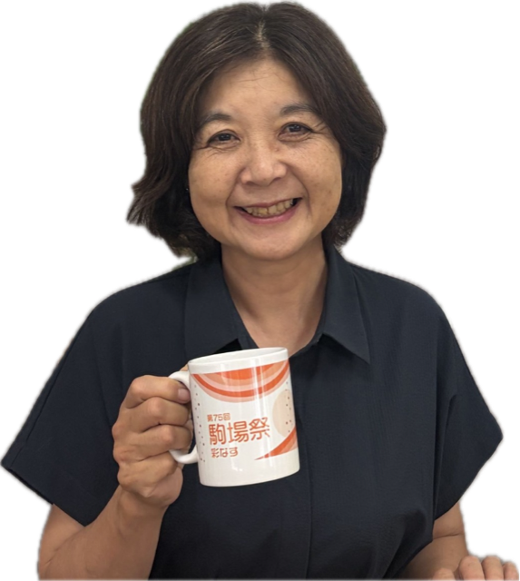
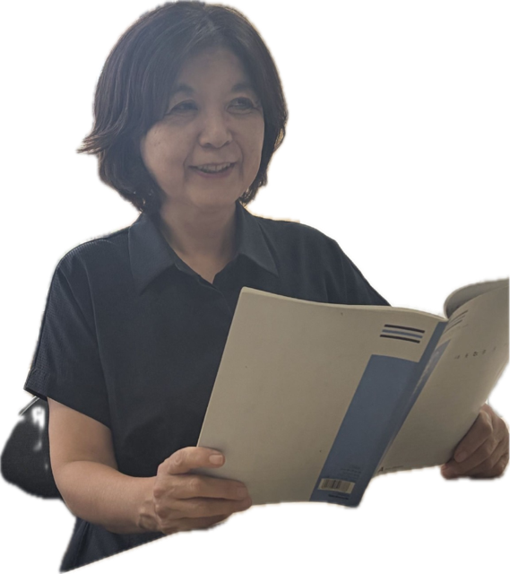

「宿題やったの？」と言いたくなったら。自分から始める子になる声かけ
夕方、ソファでゴロゴロしているわが子を見ると、つい口から出てしまう「宿題やったの？」。返事はあいまいで、結局もう一度「早くしなさい！」。夜になって「また言ってしまった」と落ち込む——。そんな毎日を過ごしていませんか。
愛情があるからこそ、言い続けてしまう。でも、言えば言うほど子どもは動かなくなります。
まずは、わが家でチェックしてみよう
- 「宿題やったの？」を、1日に何回言っている？
- 言われないと、宿題を始めないことが多い？
- 始める時間を、子ども自身が決めたことはある？
ひとつでも当てはまったら、この記事がヒントになるはずです。
この記事でわかること
- 「宿題やったの？」が逆効果になりやすい理由
- 子どもが「始められない」脳のしくみ
- 声かけを「ひとつだけ」変える方法
- 個性タイプ別、響きやすい声かけ
01なぜ「宿題やったの？」は逆効果になりやすいのか
宿題やったの？
……あとでやる。
「宿題やったの？」は、質問の形をしていますが、子どもにとっては「やっていないでしょう」という確認に聞こえます。始めるかどうかを決めているのが親になってしまうので、子どもは「言われたらやるもの」と覚えていきます。
図1言えば言うほど、動かなくなる流れ
その結果、「私が言わないと、この子は何もしない」という状態が続いてしまうのです。
02子どもが「始められない」のは、脳のしくみのせい
やる気がないように見えても、子どもはなまけているとは限りません。「始める」こと自体が、子どもの脳にとってむずかしいのです。
脳のしくみ
「遊びをやめて、宿題を始める」には、気持ちを切りかえ、やりたいことをがまんし、やることを順番に考える力が必要です。この力は「実行機能」と呼ばれ、脳の前の方にある前頭前野が中心になって働きます。
Diamond（2013）Annual Review of Psychology🧠 脳の研究
「始める力」の脳は、育つのが後のほう
育つ
育つ
脳は後ろの方から前の方へと育ち、高度な働きをする部分は後のほうに育ちます。実行機能は、子ども時代から少しずつ育っていく力なのです。
Gogtay ほか（2004）PNAS図2「宿題を始める」ときに使っている力（実行機能）
- がまんする力まだ遊びたい気持ちをおさえる
- 切りかえる力遊びのモードから、宿題のモードへ
- 覚えておく・順番を考える力何を、どの順にやるかを頭に置いておく
Diamond（2013）による実行機能の3つの柱（抑制・切りかえ・ワーキングメモリ）を、わかりやすく言いかえて作成。
だから、親が「早く！」とせかすより、子どもが自分で「いつ始めるか」を決められるように手伝うほうが、この力を育てる近道になります。
03声かけを「ひとつだけ」変えてみる

全部を一度に変える必要はありません。いちばんよく言ってしまう一言を、ひとつだけ置きかえてみましょう。
決めたのが自分なので、守ろうとする気持ちが生まれやすくなります。
みほ先生のポイント
大切なのは、決めた時間になるまでは口を出さずに待つこと。時間になったら「何時って言ってたっけ？」と、本人に思い出してもらいます。
📖 発達心理学の研究
「自分で決めさせる」親の子は、自分から伸びる
自分で選ぶ余地を残す（自律性の支援）
学ぶ子ども本人の答え
力・適応先生の評価
よい成績・学力
「今日は何時から始める？」と聞くのは、まさにこの「自律性の支援」です。
Grolnick & Ryan（1989）Journal of Educational Psychology04響く言葉は、子どもによって違う
同じ声かけでも、子どもによって届き方は違います。子どもの4つの個性タイプで見ると、こんな違いがあります。
図3個性タイプ別：動きやすくなる声かけ
動きやすいのは「なぜやるのか」がわかるとき
声かけの例「これをやっておくと明日の授業が楽になるよ」
動きやすいのは「一緒に」が安心につながるとき
声かけの例「一緒に始めようか」
動きやすいのはゴールが見えるとき
声かけの例「今日は何時から始める？」
動きやすいのは自分で決める余地があるとき
声かけの例「今日は何時から始める？」
05うまくいかなくても、失敗ではない

うまくいかなかったら、それは「この子にはこの言葉が合わない」とわかったということ。次の言葉を試す材料にしてください。
声かけを変えても、すぐに動くとは限りません。実行機能は少しずつ育つ力なので、時間がかかって当たり前です。
ちょっとひと息
親が教科の先生になる必要はありません。子どもが自分で考えて、始めやすくなる関わり方を、少しずつ見つけていけば大丈夫です。
まとめ
- 「宿題やったの？」を「今日は何時から始める？」に置きかえる
- 決めた時間までは口を出さずに待つ
- 響く言葉はタイプで違う。合わなければ次の言葉を試す
参考にした研究
- Diamond, A. (2013). Executive functions. Annual Review of Psychology, 64, 135–168.
- Gogtay, N., et al. (2004). Dynamic mapping of human cortical development during childhood through early adulthood. PNAS, 101(21), 8174–8179. 論文を読む
- Grolnick, W. S., & Ryan, R. M. (1989). Parent styles associated with children's self-regulation and competence in school. Journal of Educational Psychology, 81(2), 143–154.

スクールオーク塾長。シングルで3人の子どもを育て、全員が東大へ。塾長として30年、1,000組以上の親子に寄り添ってきました。国立大学で発達認知学・言語発達学・大脳生理学を専攻。